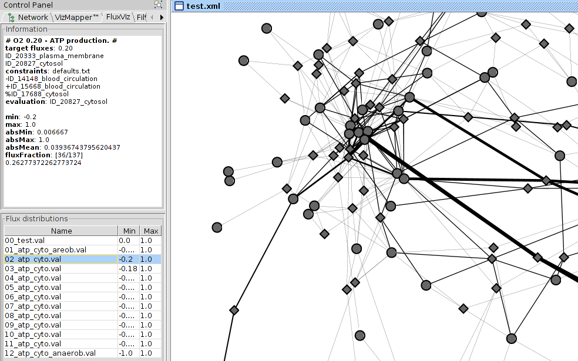
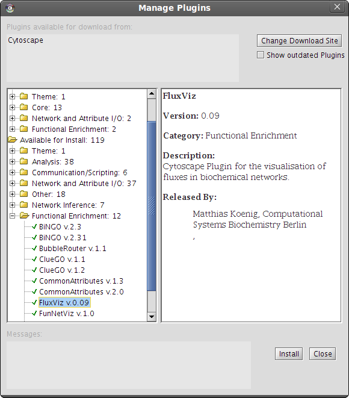
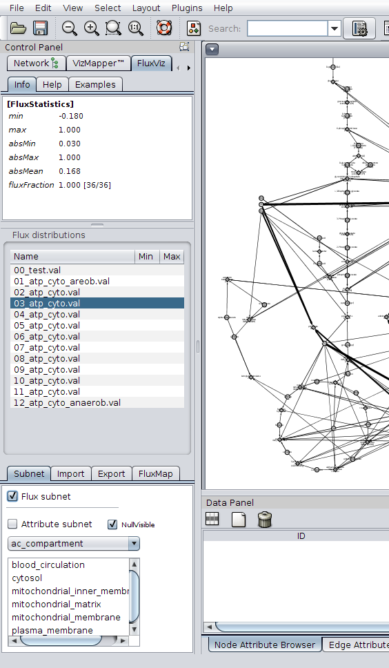
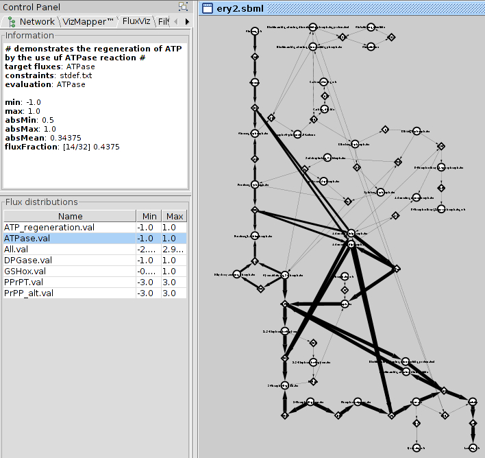

Introduction
Motivation
Methods like FBA and kinetic modeling are widely used to calculate fluxes in metabolic networks. For the analysis and understanding of simulation results and experimentally measured fluxes visualization software within the network context is indispensable.
Results
We present FluxViz, an open-source Cytoscape [1] plug-in for the visualization of flux distributions in molecular interaction networks.
- import of networks (SBML, GML, XGMML, SIF, BioPAX, PSI-MI)
- import of flux distributions in a variety of formats
- subnetworks based on flux carrying reactions (flux subetwork) or arbitrary network attributes
- flexible mapping architecture for all visual attributes
- export of views in variety of formats (SVG, EPS, PDF, BMP, PNG)
- batch capabilities
Availability
The platform-independent program is an open-source project, freely available at http://sourceforge.net/projects/fluxvizplugin/ under GNU public license, including manual, tutorial and examples.
Publications originating from the use of FluxViz should include citations of the relevant publications (see below).:
| Matthias König and Hermann-Georg Holzhütter (2010) FluxViz - Cytoscape Plug-in for Vizualisation of Flux Distributions in Networks Genome Informatics [accepted] |
|  | Fig.1: FluxViz visualization of flux distribution in human hepatocyte network. FBA Simulations were performed in FASIMU. The ATP production was set as target flux under varying oxygen conditions. For the layout a standard Cytoscape Layout algorithm was used. FluxViz Panel on the left with information about the selected flux distribution and selection area for the loaded flux distributions. (Click for larger version) |

|
Fig.2: FluxViz visualization of FASIMU FBA simulation in reconstructed hepatocyte network. Metabolic network consists of glycolysis, gluconeogenesis, pentose phosphate pathway and citrate cycle. Identical network to Fig.1, but different layout algorithm. Manual generated layout was used for the visualisation. On the left the FluxViz Control Panel with the FluxViz help system, the flux distribution area and the settings area. (Click for larger version) |
{kind=link}
Cytoscape is an open source bioinformatics software platform for visualizing molecular interaction networks and integrating these interactions with gene expression profiles and other state data.
FluxViz is an Cytoscape Plugin which enables the visualization of flux distributions in molecular interaction networks. One usage case are FBA simulations in metabolic networks.
Edge and node attributes of the network view are changed according to the selected flux distribution (s. Fig.1 and Fig.2).
FluxViz is not limited to biochemical reaction networks but can be applied for the visualisation of arbitrary fluxes in arbitrary graphs.
FluxViz was primarily developed as tool for the visualisation of fluxes in metabolic networks and as frontend for FASIMU, a flexible software for flux-balance computation series in large metabolic networks.
Features FluxViz v0.14
- Import flux distributions
- Import FASIMU val files
- Import flux distributions as Cytoscape attributes
- Mapping of flux distributions on network attributes
- Edge size, edge direction and edge tooltip are used for the visualisation of the flux through the corresponding edge
- Additional node and edge attributes can be used to represent additional data like for example localisation as node color or gene expression as node size.
- Flexible mapping functions
- Cycle through loaded flux distributions
- On the fly generation of flux distribution mapping with consistent layout
- Annotation of simulation information to flux distributions
- import of FASIMU simulations file
- Limit visualization to subnetwork
- flux containing subnetworks (only flux containing edges and nodes)
- subnetworks based on arbitrary attributes
- Additional mappings possible (like gene expression or localisation)
- Image export of generated flux distributions
- export of images in all supported Cytoscape formats (PDF, EPS, PNG, SVG, BMP)
FluxViz is developed and maintained by Matthias Koenig at the Computational Systems Biochemistry group of the Charite Berlin.
Project homepage
http://www.charite.de/sysbio/people/koenig/software/fluxviz/help/
Project hosted at
http://sourceforge.net/projects/fluxvizplugin/.
Installation
[top]Cytoscape has to be installed prior to the plugin installation. The plugin works with Cytoscape versions 2.6 and 2.7. FluxViz can be installed manually or via the Cytoscape Plugin Manager.
Manual Installation
FluxViz is avaiblable for download at http://sourceforge.net/projects/fluxvizplugin/. The current version can also be downloaded via the download link on the left.
Download the latest Plugin version and move fluxviz-vx.x.jar into the Cytoscape plugin directory located in the Cytoscape installation directory under plugins
$CYTO_INSTALL/plugins/.
The plugin is loaded and installed during the next Cytoscape start.
To update to a newer version of FluxViz replace the old fluxviz-vx.x.jar with the current version. Furthermore remove the FluxViz files for the old installation under $HOME/.cytoscape/2.x/plugins/
Installation via the Cytoscape Plugin Manager
FluxViz is also available via the Cytoscape plugin manager. The current version in the Cytoscape Plugin Manager can be older than the current available version for manual installation.
The Cytoscape Plugin Manager is available in the Cytoscape menu
Plugins -> Manage Plugins.
The FluxViz Plugin is listed in 'Functional Enrichment'. Select the Plugin and click install.
To update an older version select
Plugins -> Update Plugins.
|  | Fig.2: FluxViz installation via the Cytoscape Plugin Manager. (Click for larger version) |
{kind=link}
Usage guide
[top]
FluxViz is integrated into Cytoscape at startup and available via the FluxViz Panel in the Cytoscape Control Panel.
|  |
Fig.3: FluxViz Panel (on the left).
The FluxViz Panel consists of three areas:
In the example on the left additional information for the flux distribution '03_atp_cyto.val' is displayed in the Information Area. The Flux Distribution Area displays the loaded Flux distributions and is mainly used for the selection of the flux distribution for visualisation and image export. The Settings Area hosts the main functionality. Additional flux distributions or simulation information can be loaded, the view can be limited to the flux containing subnetwork or flux distributions can be exported as images. The mapping function for the flux mapping can also be adapted in this area. (Click for larger image) |
Requirements for FluxViz
To visualise flux distributions
1. Network for the visualisation has to be loaded (session file or SBML import of network).
Session files are loaded via
File -> Open
SBML files should always be imported into a new empty session
File -> New -> Session
File -> Import -> Network (multiple file types)
For the SBML import the SBMLReader2 should be used.
2. Flux files (*.val) consisting of id -> flux mappings corresponding to the loaded network have to be imported. The used network and the loaded flux files have to be consistent.
The val files can be imported by clicking on the Load val button and selecting the val files.
3. 'sbml type' node attribute with the classification 'species' and 'reaction' for all nodes is necessary. This attribute is automatically generated if the network is imported as SBML. If the 'sbml type' node attribute is not available it has to be generated manually (s. FAQ). Normally this attribute should be available after the import of the network.
The normal workflow is to load a network and the corresponding val files into Cytoscape. Afterwards additional information from the FASIMU simulations file can be loaded via the Load sim button.
By selecting the different flux distributions in the Flux distributions area the mappings are applied to the current network.
Main FluxViz Functionality
Loading network (import SBML)
The network is imported viaFile -> Import -> Network (multiple file types).
For the SBML import the SBMLReader2 Plugin for Cytoscape should be used. This reader supports all SBML levels and versions and reads the edge attribute from the file.
If the network has been imported before also the Cytoscape session file *.cys can be used.
Loading flux distributions
After loading the network for the flux visualisation the flux distributions for the network have to be loaded. This is managed via Load val. Node attributes for the val files and the necessary edge attributes (edge_val & edge_val_dir) are generated.
The available flux distributions are shown in the Flux Distributions Area in the FluxViz Control Panel. To visualise the fluxes select one of the loaded flux files in the table. The information about the selected flux distribution is displayed in the information panel and the flux mapping is updated based on the selected flux distribution.
Deleting flux distributions
To delete flux distributions (val attributes) the node val attributes have to be deleted. The flux val files are updated automatically. Don't delete the *.val_edge or *.val_edge_dir files without the corresponding node *.val files.
Visualisation of flux subnetworks
FluxViz can visualise the flux containing subnetwork in the full network graph. Only the edges with (flux != 0.0) and the adjacent 'reaction' and 'species' nodes are shown. To limit the view to the flux subnetwork activate flux subnetwork in the Settings Area.
Apply additional mappings
Additional mappings of node and edge attributes can be used in the visualisation. These additional mappings are generated in the VisualMapper in the Control panel. So for example the localisation of the metabolic network elements can be mapped to the node color or gene expression values to the node size.
Reuse of layouts
For the understanding of fluxes in metabolic networks a consistent layout of the metabolic networks is necessary. All the Cytoscape layout algorithms can be used or manually created layouts be used for the visualisation of the fluxes. The Layouts can be stored by storing the Cytoscape session. Additional flux simulations can be mapped on the same network.
Examples
[top]
Example networks with corresponding flux data are available in FluxViz.
The examples are part of the FluxViz.jar and are installed in
$HOME/.cytoscape/2.6/plugins/FluxVizData/examples/.
The examples consist of
| network.sbml | SBML of the network |
| /val/*.val | val files of FASIMU FBA simulations |
| simulations | FASIMU simulation description file |
| network.cys | Cytoscape session file of network |
The examples can be manually loaded from Cytoscape by loading the *.cys Session file or importing the *.sbml SBML network. The layout information is lost during the SBML import.
Cytoscape can be started with the FluxViz example networks by setting the -P FluxVizExample flag during Cytoscape startup.
| Network | Cytoscape flag | |
|---|---|---|
| Standard Hepatocyte network | -P FluxVizExample=1 | |
| Erthrocyte network with layout | -P FluxVizExample=2 | |
| Standard Hepatocyte network with layout | -P FluxVizExample=3 | |
| HepatoCyte Core network | -P FluxVizExample=4 |

|
Fig.6: Hepatocte example flux of FASIMU FBA simulation. Automated network layout algorithm used. -P FluxVizExample=1 (Click for larger version) |
|  |
Fig.7: Erythrocyte example flux of FASIMU FBA simulation. Metabolic network with glycolysis and pentose phosphate pathway. -P FluxVizExample=2 (Click for larger version) |
|
|
Fig.8: Hepatocyte example flux of FASIMU FBA simulation. Metabolic network consisting of glycolysis, gluconeogenesis, pentose phosphate pathway and citrate cycle. -P FluxVizExample=3 (Click for larger version) |
{kind=link}
Additional Resources
[top]Use the following link for the citation of FluxViz:
| 2010 | Matthias König and Hermann-Georg Holzhütter, FluxViz - Cytoscape Plug-in for Vizualisation of Flux Distributions in Networks, Genome Informatics, (2010) [submitted] |
- API documentation
- Additional help information is available via the 'help' button in the Settings Area in the FluxViz Control panel.
- short FluxViz presentation fluxviz_introduction.pdf
Links
FluxViz
http://www.charite.de/sysbio/people/koenig/software/fluxviz/help/index.html
http://sourceforge.net/projects/fluxvizplugin/
http://www.charite.de/sysbio/people/koenig/
SBMLReader2
http://www.charite.de/sysbio/people/koenig/software/sbmlreader2/help/
http://sourceforge.net/projects/sbmlreader2/
Cytoscape
http://www.cytoscape.org/
Cytoscape plugins
http://chianti.ucsd.edu/cyto_web/plugins/index.php
FASIMU
http://www.bioinformatics.org/fasimu/
Development
[top]Subversion Access
The project is open source. Everybody can participate.
This project's SourceForge.net Subversion repository can be checked out through SVN with the following instruction set:
svn co https://fluxvizplugin.svn.sourceforge.net/svnroot/fluxvizplugin fluxvizplugin
FAQ
[top]The links to the Help Tutorial, JavaDoc and Contact are not working.
The defaultWebBrowswer has to be set under
Edit -> Preferences -> Properties
and the proxy has to be set correctly under
Edit -> Preferences -> ProxyServer
I get the error message no complete node attribute 'sbml type' when I try to import val files.
For FluxViz to work with *.val files a node attribute 'sbml type' is necessary. Normally this is generated during the SBML import of the network. If the network was imported in any other format than SBML this attribute is missing and has to be manually generated.
Select the 'Node Attribute Browser' and click Create new attribute -> String attribute. Enter 'sbml type' as attribute name.
Now all nodes have to be classified in 'reaction' and 'species'. Select all reaction nodes and open the 'Attribute Batch Editor'. Select Set - sbml type to 'reaction. Select all compound nodes and open the 'Attribute Batch Editor'. Select Set - sbml type to 'species'.
Now the import of the val files should work.
Bugs in FluxViz-v0.1
[top]- FluxViz has problems with multiple networks in v.0.1. Therefor only a single network with the corresponding fluxes should be loaded in one session.
Comming Features in v0.2
[top]- support for multiple networks in one session
- export of images in all supported Cytoscape formats (PDF, EPS, PNG, SVG, BMP)
- alternative input formats (to support additional edge/flux data)
- speed improvments in the flux subnetwork generation and visual mapping
- improved javadoc documentation